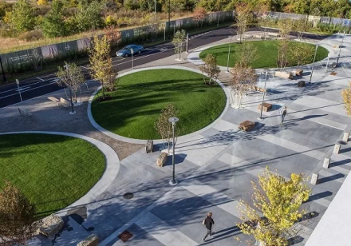

Результаты опроса о состоянии инвестиционного и предпринимательского климата в Тульской области для представителей средних предприятий
Дата окончания опроса:
Здесь будет описание опроса (информация из стандартного поля). Рыбным текстом называется текст для временного наполнения макета в публикациях или производстве веб-сайтов, пока финальный текст еще не создан. Рыбный текст известен как текст-заполнитель.
Результаты опроса
Выберите на ваш взгляд наиболее подходящий дизайн парковой зоны?
-
122 (20%)
-
 140 (10%)
140 (10%) -
 318 (80%)
318 (80%)
Удовлетворены ли Вы качеством предоставления государственных и муниципальных услуг в настоящее время?
Да, удовлетворен 140 (30%)
Нет, не удовлетворен 250 (70%)
Знаете ли Вы о возможности получения государственных и муниципальных услуг по принципу "одного окна" в вашей области?
Да, знаю точно 320 (20%)
Да, примерно знаю 443 (60%)
Нет 124 (20%)
О каких способах взаимодействия с органами власти Вам известно?
Личный прием должностного лица 332 (30%)
Телефон доверия Губернатора 155 (10%)
Электронное письмо посредством e-mail 240 (20%)
Официальное письмо 0 (0%)
Обращение на портале 789 (70%)
Ничего этого не знаю 0 (0%)
Другое 140 (10%)
Используете ли Вы механизм получения государственных и муниципальных услуг в электронной форме?
Да, использую 189 (20%)
Нет, не использую 318 (80%)
Оцените качество получения государственных и муниципальных услуг
1 очень плохо 125 (0%)
2 125 (0%)
3 180 (50%)
4 90 (10%)
5 125 (10%)
6 125 (30%)
7 180 (100%)
8 90 (10%)
9 180 (50%)
10 очень хорошо 90 (10%)
Выберите на ваш взгляд наиболее подходящий дизайн парковой зоны?
-
122 (20%)
-
140 (10%)
-
318 (80%)
Обращались ли в течение последнего года в орган государственной власти для получения государственных (муниципальных) услуг?
Да 232 (40%)
Нет 298 (60%)
Сколько составило время ожидания?
Менее 15 минут 125 (10%)
От 15 минут до 30 минут 125 (30%)
От 30 минут до часа 180 (50%)
Более 1 часа 90 (10%)
Знаете ли Вы о программах, реализуемых органами государственной и муниципальной власти, направленных на формирование кадрового резерва?
Да, знаю точно 140 (10%)
Да, примерно знаю 320 (60%)
Нет 250 (30%)
Каков род Ваших занятий в настоящее время?
Служащий 240 (10%)
Государственный, муниципальный служащий 378 (30%)
Рабочий 450 (50%)
Пенсионер 140 (10%)
Студент (вуза, техникума, колледжа) 0 (0%)
Безработный, временно не работающий 0 (0%)
Предприниматель 0 (0%)
Военнослужащий, работник правоохранительных органов 0 (0%)
Другое 0 (0%)
Какие варианты прогулочной зоны вам нравятся больше?
Выберите один или несколько вариантов ответа
-
125 (0%)
-
125 (30%)
-
180 (50%)
-
 90 (10%)
90 (10%) -
 125 (10%)
125 (10%)